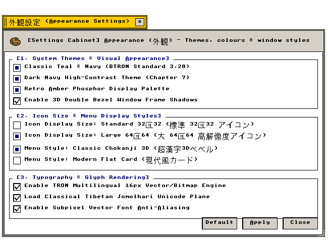

外観設定 (Appearance)
グラフィックス設定 · アイコン幾何学 · メニュー構造 · 多言語フォント
デスクトップ環境、アイコン表示寸法、メニュー描画様式、多言語フォントエンジンの設定仕様
"Technical specification of B-System visual parameters: display color palettes, icon grid metrics, dual menu rendering models, and multilingual glyph rasterization."
← 設定フォルダ (Settings Folder Index)
外観設定（Appearance） — B-Systemのグラフィカル環境パラメータを管理する設定アプレット。操作仕様およびC99内部データ構造の技術的定義。
"System-wide visual parameter management: runtime configuration of frame buffers, icon Euclidean geometries, and C99 graphics driver state."
画面プレビュー (Screen Preview)

実機描画フレームバッファより自動抽出された透過外観設定ウィンドウ (Native Headless GDEV Capture)
概要 (Overview)
外観アプレット（src/settings/appearance.c）は、デスクトップ全体のカラーテーマ、アイコン表示寸法、メニュー立体表現、多言語フォント描画エンジンを一元管理します。設定更新時は「適用（Apply）」により、redraw_all_windows() を通じて開いているすべてのウィンドウおよびデスクトップ空間へリアルタイムに変更が反映されます。
"The visual configuration console of B-System: synchronizing color palettes, Euclidean grid metrics, and window bevels across all active tasks."
基本操作仕様 (Operational Specifications)：
・[標準 (Default)]：工場出荷設定（64×64アイコン、超漢字3Dメニュー、全テーマ・描画フラグ有効）に復元します。
・[適用 (Apply)]：設定変更を確定し、すべての画面・ウィンドウを即座に再描画（redraw_all_windows()）します。
・[閉じる (Close)]：設定ウィンドウを破棄します（cls_wnd()）。
1. システムテーマと配色設定 (System Themes & Color Palettes)
画面表示環境に応じたカラーパレットおよびウィンドウ立体枠影の設定仕様。
"Display color palette mapping: classic desktop chrome, dark-mode terminal contrast, and high-legibility ambient illumination."
| テーマ名・配色識別子 |
画面構成と視覚仕様 (Visual Specification) |
技術仕様・C99定義 (C99 Definition) |
Teal Classic
(標準ティール) |
深緑基調の伝統的デスクトップ背景。超漢字・BTRON標準ワークスペース配色。長時間の文書編集において眼精疲労を最小限に抑制。 |
COLOR_TEAL: #008080 (RGB 0, 128, 128)
DesktopColor = COLOR_TEAL |
Dark Navy
(ダークネイビー) |
深紺のダークモード背景。高コントラスト暗色テーマ。暗所環境での視認性向上とディスプレイ消費電力の低減。 |
COLOR_DKNAVY: #0A192F (RGB 10, 25, 47)
DesktopColor = COLOR_DKNAVY |
Dark Amber
(ダークアンバー) |
クラシック琥珀端末風の暖色系暗色背景。夜間作業に適した高品位コントラスト。 |
COLOR_DKAMBER: #1A1000 (RGB 26, 16, 0)
DesktopColor = COLOR_DKAMBER |
ベゼル枠影
(Bezel & Shadow) |
立体感のあるウィンドウベゼル描画。枠外周に1ピクセルの明暗境界線を生成し、アクティブウィンドウを際立たせる視覚効果。 |
COLOR_LTGRAY: #D0D0D0
COLOR_DKGRAY: #404040
2段立体ベベル描画アルゴリズム |
2. アイコン表示サイズ幾何学 (Icon Sizing: 32×32 / 64×64)
ワークベンチ（デスクトップ）やキャビネット（ファイル管理）で表示されるピクトグラムの大きさを選択します。
"Euclidean icon grid layout switching: dense 32-pixel indexing for high-resolution displays versus standard 64-pixel touch and desktop targets."
| 寸法識別子・選択肢 |
表示仕様とレイアウト挙動 (Layout Specification) |
技術仕様・幾何学構造 (Technical Geometry) |
32×32 ピクセル
(コンパクト表示) |
高解像度ディスプレイや大量ファイル一覧に適した省スペースレイアウト。キャビネット内のグリッド間隔を自動圧縮し、一覧性を最大化。 |
BTRON_ICON_SIZE_32 = 32
Cabinetグリッド: 96×72 px
Control Panel窓高: 520 px |
64×64 ピクセル
(標準表示・出荷時) |
視認性に優れた標準ピクトグラム表示。グラフィカルな実身・仮身アイコンの細部描画を維持し、直感的なタッチ・マウス操作を実現。 |
BTRON_ICON_SIZE_64 = 64
Cabinetグリッド: 110×104 px
Control Panel窓高: 660 px |
ウィンドウヘッダ固定仕様
(Header Icon Policy) |
全設定ウィンドウおよびアプリのタイトルバー内左端アプリアイコンは、全体サイズ設定に関わらず常に32×32pxで統一描画。 |
draw_setting_gif_icon_scaled()
固定ヘッダバウンディング: 32×32 px |
3. メニュー描画様式 (Menu Style: Classic 3D / Modern Card)
システム全体のメニューバー、プルダウン、デスクバー（Tracker）の描画アルゴリズムを指定します。
"Dual menu rendering models: classic Chokanji 4-sided beveled surfaces versus modern card overlays with alpha drop-shadow."
| メニュー様式 |
視覚的特徴と描画動作 (Rendering Specification) |
技術仕様・C99定義 (C99 Architecture) |
超漢字 3D ベベル
(Classic 3D) |
伝統的なBTRONおよび超漢字スタイルの立体ベベルメニュー。4辺の明暗境界線による浮き出し効果。クラシックな操作感。 |
APP_MENU_STYLE_CLASSIC_3D
app_menu_set_global_style(0)
外周4辺ベベル描画パイプライン |
Modern Flat Card
(モダンカード) |
1ピクセルの洗練された外枠境界線と3ピクセルの滑らかなドロップシャドウを合成する現代的フラットデザイン。 |
APP_MENU_STYLE_MODERN_CARD
app_menu_set_global_style(1)
枠線: COLOR_DKGRAY + 3px 影 |
全システム波及仕様
(Global Propagation) |
設定変更は、アプリケーション固有メニュー（APP_MENU_BAR）、画面上部固定グローバルシステムメニュー、デスクバー（Tracker）へ一括適用。 |
app_menu_get_global_style()
global_menu.c / tracker.c 連携 |
4. 文字・フォント描画 (Typography & Multi-Language)
TRON多言語文字体系（第1面〜第16面）およびUnicode多言語フォントのレンダリングエンジン設定。
"TRON 16-plane multilingual font rasterizer: subpixel anti-aliasing, smoothing, and complex script stacking (Tibetan Jomolhari)."
| 設定項目・機能名 |
動作概要と視覚仕様 (Visual Specification) |
技術仕様・フォント面 (Font Plane Specs) |
TRON 多言語文字面
(16-Plane Glyph) |
JIS第1〜第4水準漢字、GT書体、トンパ文字、変体仮名、歴史的文字セットを網羅するTRON多言語フォント面デコーダ。 |
TRONコード第1〜第16面デコーダ
font_manager_render_char() |
チベット文字スタック
(Tibetan Unicode) |
Jomolhari Unicodeフォントを用いた古典チベット語の縦方向結合スタック（Subjoined consonants）と母音記号の精密合成描画。 |
Jomolhari TrueType Rasterizer
Wylie/EWTS 子音スタック自動結合 |
サブピクセル描画
(Font Smoothing) |
液晶ディスプレイにおけるフォント輪郭のスムージング処理。微小サイズ文字の可読性を大幅に向上。 |
サブピクセルアンチエイリアシング
8-bit グレースケールマスク合成 |
5. 全設定パラメータ仕様一覧 (Configuration Parameter Specifications)
外観設定アプレットが提供するすべての設定要素、初期値、およびC99内部シンボル。
"Comprehensive parameter specification table: indexing all UI widget states, factory defaults, and underlying C99 data symbols."
| セクション |
パラメータ名 / UI要素 |
標準値 (Default) |
設定値 / 選択肢 |
C99 内部変数・シンボル |
| [1] 配色・枠影 |
デスクトップ背景色 (Radio) |
Teal (深緑) |
Teal / Navy / Amber |
DesktopColor (COLOR_TEAL) |
| 立体ベゼル枠影 (Checkbox) |
有効 (Checked) |
有効 (1) / 無効 (0) |
g_appearance.bezel_shadow |
| [2] アイコン |
アイコン表示サイズ (Radio) |
64×64 (標準) |
32×32 / 64×64 |
appearance_set_icon_size() |
| グリッド自動吸着 (Checkbox) |
有効 (Checked) |
有効 (1) / 無効 (0) |
g_appearance.grid_snap |
| タイトルバーアイコン (固定) |
32×32 (固定) |
32×32 固定規約 |
draw_setting_gif_icon_scaled() |
| [3] メニュー |
メニュー描画様式 (Radio) |
超漢字 3D (立体) |
超漢字 3D / モダンカード |
app_menu_set_global_style() |
| メニュー半透明影 (Checkbox) |
有効 (Checked) |
有効 (1) / 無効 (0) |
g_appearance.menu_shadow |
| [4] フォント |
標準書体 (Dropdown) |
明朝体 (Mincho) |
明朝 / ゴシック / Jomolhari |
g_appearance.system_font |
| 文字スムージング (Checkbox) |
有効 (Checked) |
有効 (1) / 無効 (0) |
g_appearance.font_smoothing |
| チベット語スタック合成 (Checkbox) |
有効 (Checked) |
有効 (1) / 無効 (0) |
g_appearance.tibetan_stacking |
関連コンポーネント (Related Components)